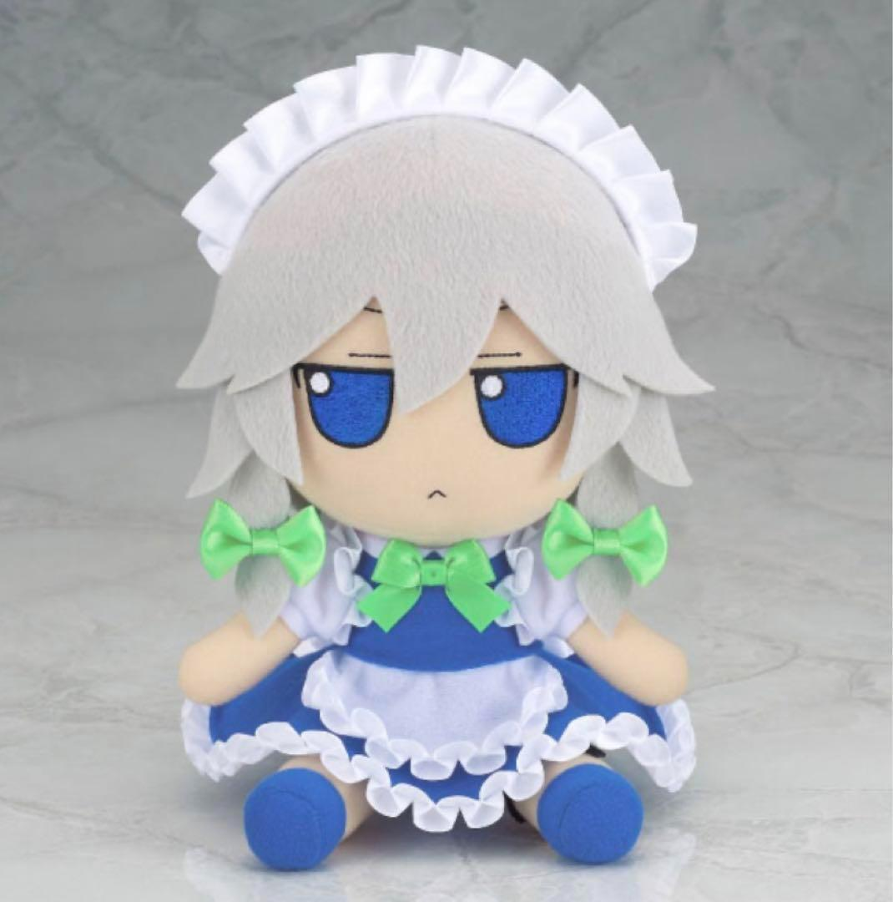
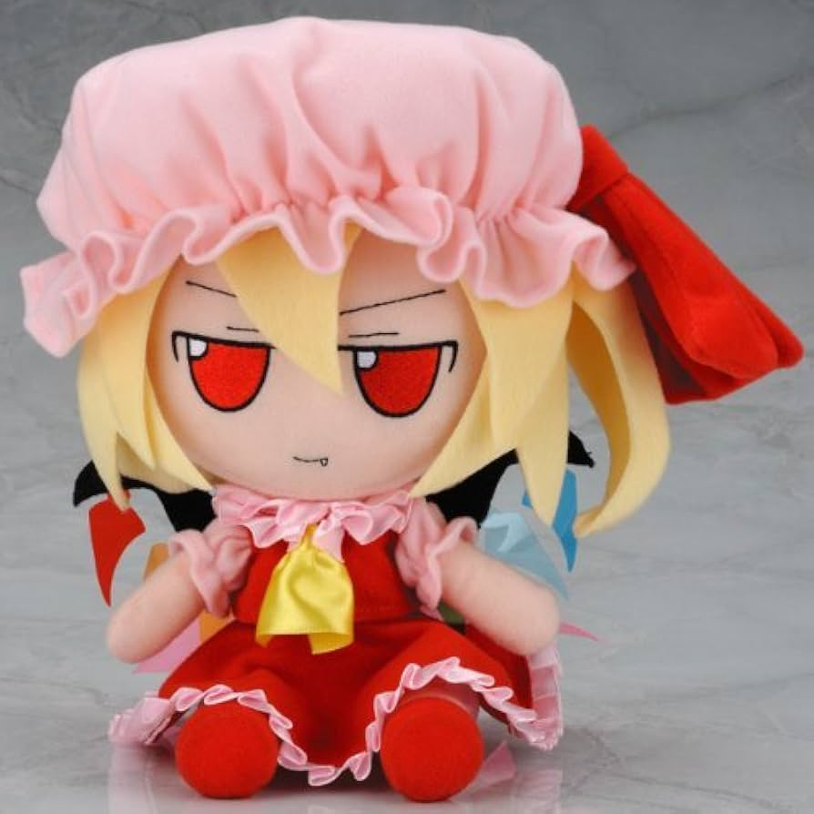
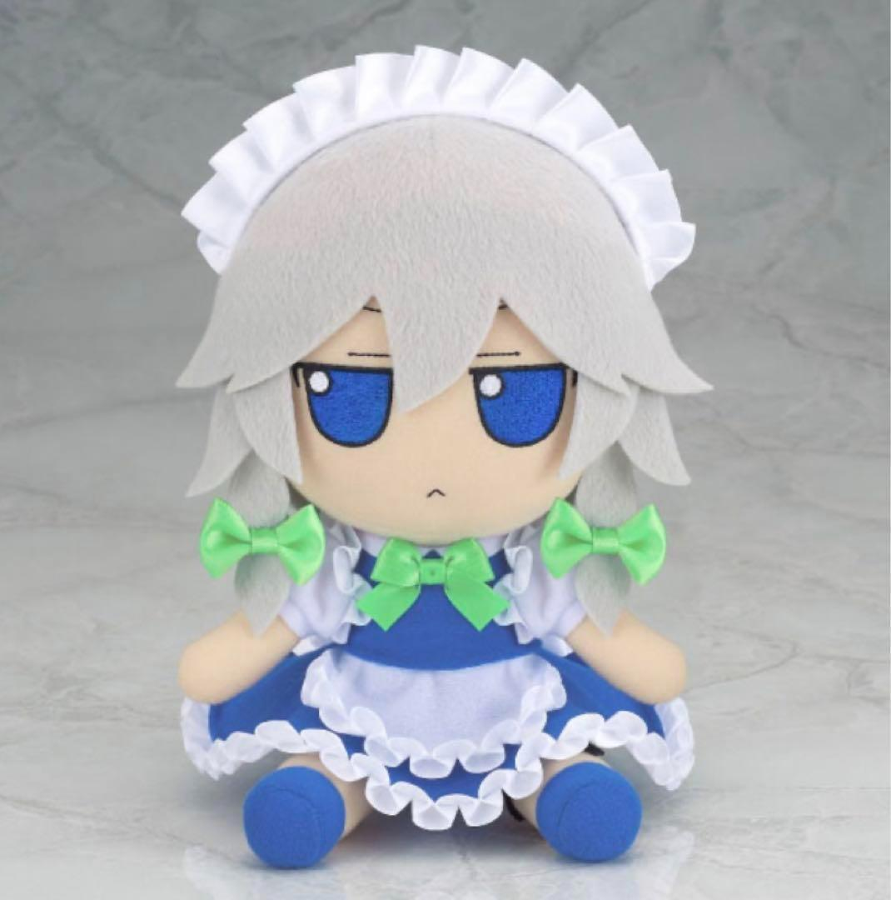
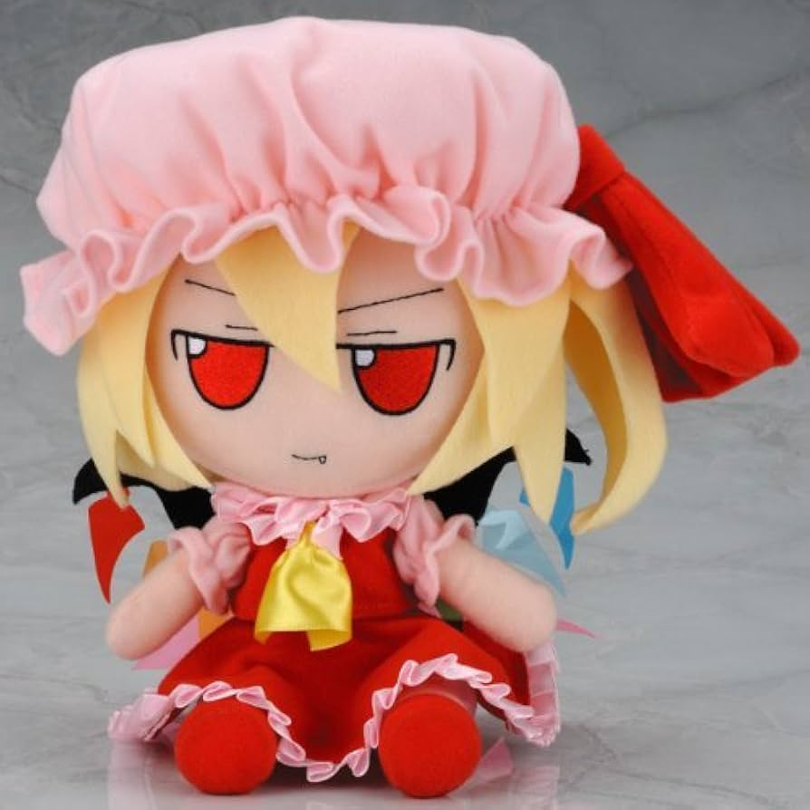
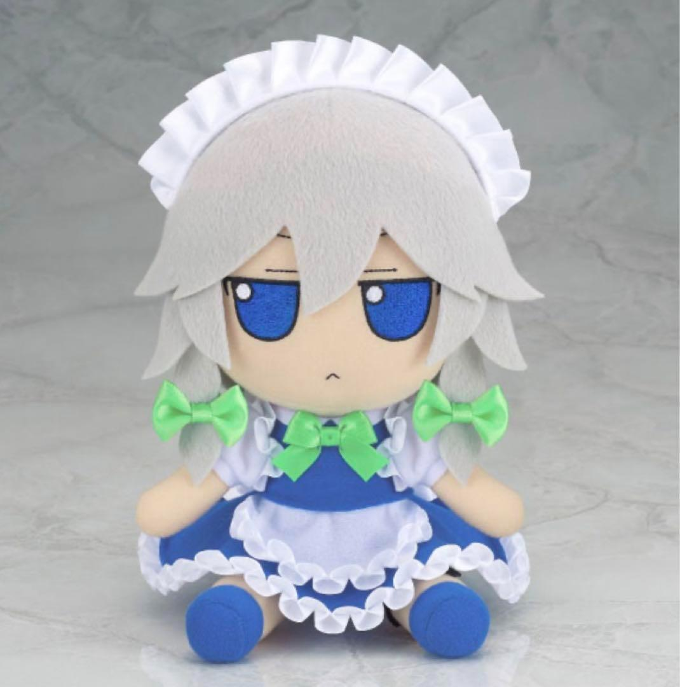
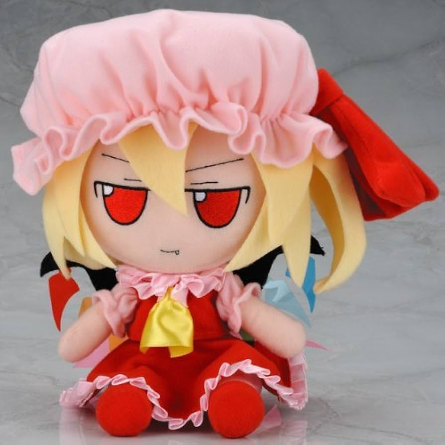
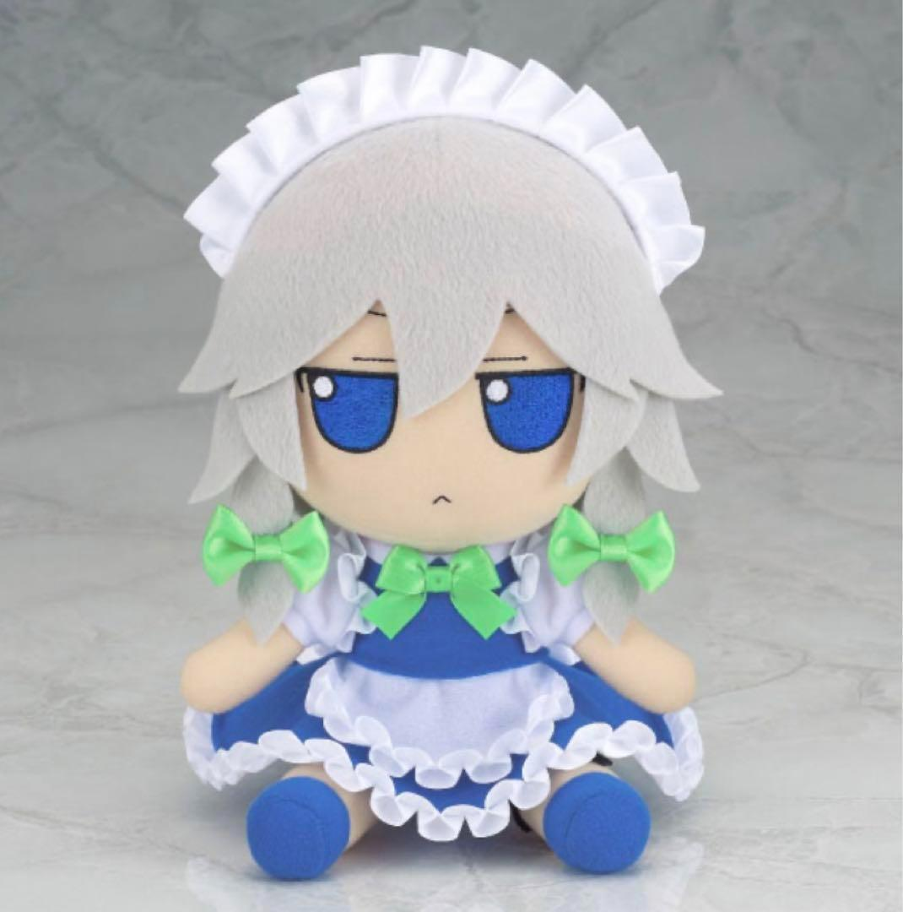
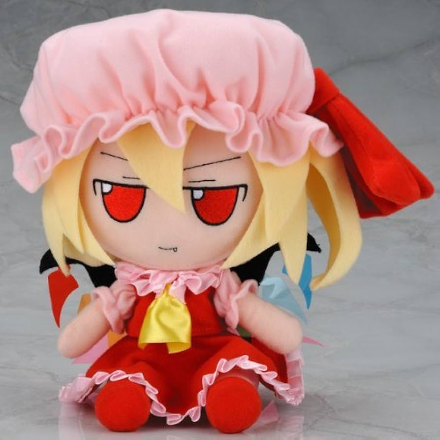

Como un videojuego con un concepto y premisa simple puede expresar valores fundamentales
  
 
 
 
Touhou Project (東方Project) es una serie de juegos doujin japonesa del género danmaku, creada por ZUN, único miembro de Team Shanghai Alice.
Normalmente los juegos oficiales tienen la temática danmaku, es decir, un shoot em' up vertical en 2D, con la diferencia de que la dificultad suele ser mucho mayor al haber una gran cantidad de balas, lo que le ha ganado una gran popularidad tanto en tierras niponas como internacionalmente, a pesar de que la saga no recibe traducciones oficiales a otros idiomas.
La serie de juegos se ambienta en Gensokyo, una región ficticia de Japón separada del resto del mundo por la Barrera Hakurei. Una de las muchas razones de la popularidad de Touhou radica en su gran variedad de personajes (en su enorme mayoría de género femenino), basados en distintas criaturas del folclore japonés conocidas como yōkai.
ZUN, cuyo nombre real es Jun'ya Ōta, es la mente creativa detrás del aclamado "Touhou Project", una serie de videojuegos que ha capturado la atención de una vasta comunidad. Antes de embarcarse en este proyecto monumental, ZUN era un estudiante universitario más, graduado de la Universidad de Tokio Denki. Durante sus años de formación, dedicó tiempo a la programación y los gráficos por computadora, explorando estas áreas como un pasatiempo personal. Su fascinación por los videojuegos danmaku marcó profundamente su camino, inspirándolo a crear sus propias versiones de este género. No hay un historial de grandes proyectos comerciales previos; su trayectoria es la de un entusiasta que, de forma autodidacta, forjó su camino en el desarrollo independiente.
El viaje de Touhou comenzó en un hardware que hoy es casi una reliquia: la serie de computadoras PC-98 de NEC. Fue en 1996 cuando ZUN, por aquel entonces un estudiante universitario con una pasión por los videojuegos de disparos, lanzó la primera entrega: "Highly Responsive to Prayers". Este título inicial, y los cuatro que le siguieron en la plataforma PC-98, sentaron las bases de lo que sería el "Touhou Project". En esta etapa primigenia, el estilo artístico era más rudimentario, pero la esencia del bullet hell ya comenzaba a formarse, con una complejidad de patrones que retaba a los jugadores. Los personajes icónicos como Reimu Hakurei y Marisa Kirisame hicieron su debut aquí, aunque con diseños que evolucionarían significativamente. Estos primeros juegos fueron distribuidos de forma independiente, a menudo en eventos como el Comiket, llegando a un público muy nicho dentro de Japón
El verdadero punto de inflexión para Touhou llegó en 2002 con el lanzamiento de "Embodiment of Scarlet Devil", el primer juego de la serie para el sistema operativo Windows. Este título no solo representó un salto tecnológico y visual considerable, sino que también fue el catalizador que catapultó a Touhou al reconocimiento masivo. La calidad de sus gráficos mejorados, la música cautivadora compuesta por el propio ZUN y, sobre todo, la evolución de los patrones de balas a niveles artísticos y desafiantes, atrajeron a una base de fans mucho más amplia y entusiasta.
A partir de aquí, el fenómeno Touhou creció exponencialmente. Cada nuevo lanzamiento en Windows, generalmente presentado en el Comiket, se convirtió en un evento muy esperado. La comunidad de fans jugó un papel crucial en su expansión; al no haber restricciones estrictas sobre la creación de obras derivadas, floreció un vibrante ecosistema de música, arte y otros contenidos generados por los propios seguidores. Este contenido generado por la comunidad no solo enriqueció el universo Touhou, sino que también sirvió como una poderosa herramienta de difusión, llevando la marca a rincones del mundo donde el juego original quizás no habría llegado por sí solo.
Más allá de su vibrante universo de personajes y su adictiva banda sonora, Touhou Project se erige como una experiencia que, a través de su desafiante jugabilidad, puede cultivar valores fundamentales como la paciencia, la resiliencia y la recompensa del esfuerzo. Para el jugador que se adentra en el infierno de balas ("danmaku") que caracteriza a la saga, la victoria no es solo una cuestión de reflejos, sino un testimonio de su crecimiento personal.
En Touhou, la pantalla se inunda rápidamente de proyectiles con patrones aparentemente caóticos e insuperables. El primer instinto de un nuevo jugador suele ser el pánico y el movimiento errático, lo que conduce a una derrota rápida. Sin embargo, el juego enseña rápidamente una lección crucial: la paciencia.
Para sobrevivir, el jugador debe aprender a observar, a identificar los patrones en el aparente caos y a encontrar los pequeños resquicios de seguridad. Se requiere una calma calculada para ejecutar movimientos mínimos y precisos, entendiendo que cada bala tiene una trayectoria definida y predecible. La frustración inicial da paso a una concentración meditativa, donde el jugador aprende a esperar el momento oportuno para moverse, a "leer" el flujo de la batalla y a no ceder ante el impulso. Esta danza milimétrica con la muerte digital es, en esencia, un ejercicio de paciencia activa.
Pocos jugadores, si es que alguno, logran completar un juego de Touhou en su primer intento, ni siquiera en las dificultades más bajas. La derrota es una constante, una parte integral de la experiencia de aprendizaje. Cada "Game Over" no es un fracaso, sino una oportunidad para analizar qué salió mal y cómo mejorar.
Aquí es donde florece la resiliencia. El jugador se ve constantemente desafiado a no rendirse. La satisfacción en Touhou no proviene de una victoria fácil, sino de superar un obstáculo que antes parecía insuperable. Recordar aquella "spell card" de un jefe que parecía imposible y finalmente lograr capturarla sin perder una vida genera una sensación de logro inmensa. El juego enseña a ver los errores como retroalimentación, a volver a intentarlo con una nueva estrategia y a perseverar ante la adversidad. Esta tenacidad se convierte en una habilidad transferible a muchos otros aspectos de la vida.
Touhou Project no es un juego que ofrezca atajos. La mejora tangible y la progresión dependen directamente del esfuerzo y la dedicación del jugador. No hay mejoras de equipo que faciliten el camino ni mecánicas de pago para ganar. El único camino hacia la victoria es la práctica constante.
Los jugadores dedican tiempo a estudiar los patrones de los jefes en el modo de práctica, a ver repeticiones de jugadores expertos y a perfeccionar su control sobre el personaje. Este proceso de "entrenamiento" deliberado demuestra que la habilidad no es innata, sino que se construye a través de la disciplina y el trabajo duro.
Cuando finalmente se logra completar un juego en una dificultad alta o conseguir un "1cc" (completar el juego sin usar continuaciones), la recompensa es puramente intrínseca. Es la satisfacción de saber que el logro es el resultado directo del propio esfuerzo, de horas de práctica y de una voluntad inquebrantable de superación. Esta es quizás una de las lecciones más valiosas que Touhou Project imparte: el esfuerzo genuino conduce a resultados reales y a una profunda sensación de autoeficacia.